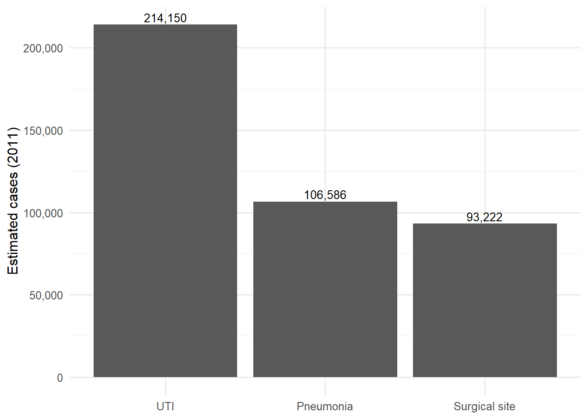

| Key HAI metrics for Germany (2011) | |
| Value | |
|---|---|
| Estimated infections (all types) | 478,222 |
| Attributable deaths (all types) | 16,245 |
| DALYs (all types) | 248,920 |
Problem description
Hospital-acquired infections (HAIs) occur during a patient’s hospital treatment. They keep people in hospital longer, add costs, and in severe cases can be fatal. In Germany, even with a mid-range infection rate, the overall impact is significant because so many people are admitted: about 480,000 infections, around 16,000 deaths, and roughly 250,000 healthy life-years lost in 2011. The key takeaway is to maintain strong universal hygiene and focus prevention efforts on the highest-risk areas, particularly pneumonia and bloodstream infections.
Data description
This post uses estimates for Germany from the ECDC 2011–2012 point-prevalence study, calculated using the BHAI method. The study reports infections, deaths attributable to infection, and disability-adjusted life years (DALYs), where one DALY equals one healthy year of life lost. Table 1 lists the headline values used in this section.
Numbers are taken directly from the published estimates, and no re-modelling was done. Only light formatting was applied for readability (thousand separators). Methods and interpretation follow Zacher et al. (2019) and Gastmeier et al. (2010).
Analysis
Source. Estimates are from the ECDC 2011–2012 point-prevalence study, using the BHAI method (Zacher et al. (2019); Gastmeier et al. (2010)). Values shown are the study’s central estimates for Germany in 2011.
Which infections are most frequent?
Urinary tract infections have the highest case counts, followed by pneumonia and surgical-site infections (Zacher et al., 2019). See Figure 1.

Do the most common infections cause the most harm?
No. Pneumonia and bloodstream infections account for a larger share of deaths and DALYs than their raw counts suggest (Zacher et al. (2019)). This supports prevention that targets not only common infections but also severe pathways.
Table 1 summarises the national totals (infections, attributable deaths, DALYs), while Figure 1 highlights frequency for quick comparison.
Why these displays?
Link back to the question
The question asked, “How big is the burden of hospital infections in Germany?” In 2011, Germany recorded about 480,000 infections, 16,000 deaths, and 250,000 healthy life-years lost (Table 1). UTIs were the most common (Figure 1), but pneumonia and bloodstream infections caused the most severe outcomes. This highlights the need for robust universal hygiene and targeted prevention measures in high-risk areas.
Conclusion
Germany’s burden from hospital-acquired infections was substantial in 2011: around 480,000 infections, 16,000 deaths, and 250,000 healthy life-years lost as shown in Table 1 and Figure 1. UTIs are frequent, but pneumonia and bloodstream infections drive the most harm. These findings are consistent with BHAI estimates and clinical work from Zacher et al. (2019) and Gastmeier et al. (2010). The practical message is clear: maintain robust universal hygiene and prioritise high-severity prevention bundles (e.g., ventilator-associated pneumonia and central-line care).
References
Gastmeier, P., Brunkhorst, F., Schrappe, M., Kern, W., & Geffers, C. (2010). How many nosocomial infections are avoidable? Deutsche Medizinische Wochenschrift, 135(3), 91–93. https://doi.org/10.1055/s-0029-1244823
Zacher, B., Haller, S., Willrich, N., Walter, J., Abu Sin, M., Cassini, A., Plachouras, D., Suetens, C., Behnke, M., Gastmeier, P., Wieler, L. H., & Eckmanns, T. (2019). Application of a new methodology and r package reveals a high burden of healthcare-associated infections (HAI) in germany compared to the average in the EU/EEA, 2011–2012. Eurosurveillance, 24(46). https://doi.org/10.2807/1560-7917.ES.2019.24.46.1900135